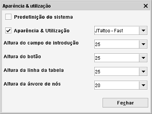

Aparência & utilização
Caminho de menu: Definições > Aparência & utilização

Um tema altera completamente a apresentação visual de uma aplicação, o... tema, por assim dizer. Seleccionar
um dos temas aplica-o diretamente.
Predefinição do sistema
É a aparência e utilização fornecida pelo Java e é especificamente desenhada para a plataforma que
está a usar.
Aparências e utilizações de sistema
Todas as aparências fornecidos pelo Java, desenhados para plataformas específicas.
Outras aparências e utilizações
Temas fornecidos pelo projeto Skin Look and Feel, localizado aqui.